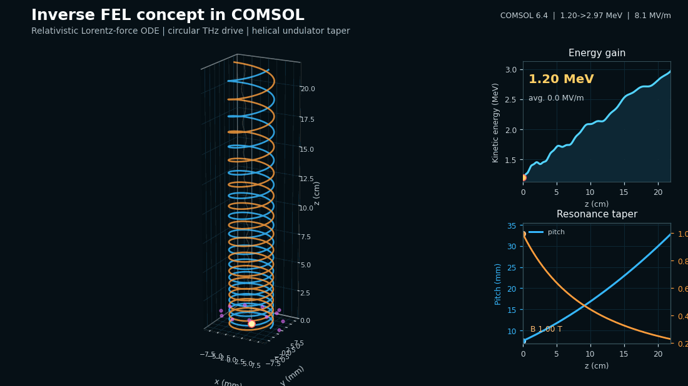

Compact accelerators · Free-electron devices
Compact particle accelerators & the inverse free-electron laser (IFEL)
Conventional RF accelerators are large and expensive. The inverse free-electron laser (IFEL) offers a route to compact acceleration: an electromagnetic wave transfers energy to a relativistic electron beam as it wiggles through a helical undulator, reaching high gradients over centimeter-scale interaction lengths.

The physics
An electron passing through a periodic magnetic (undulator) field acquires a transverse velocity component. When a co-propagating electromagnetic wave — here a circularly-polarized terahertz drive — is phase-matched to that transverse motion, the wave does net work on the electron and it gains energy (the inverse of the free-electron-laser radiation process). Sustaining the energy exchange as the electron accelerates requires tapering the undulator (its period/pitch and field) to hold the resonance condition.
The model
The trajectory is computed from the full relativistic Lorentz-force equation of motion in COMSOL Multiphysics, coupling the helical undulator field and the THz drive. Outputs include the 3-D electron trajectory, the energy-gain curve along the interaction length, and the taper profile required for phase-locked acceleration — the design tools needed to size a real compact-accelerator stage.